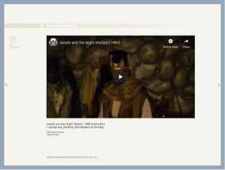

-2-MasterItem.svg)
Table of Contents
Return
to Table
of Contents
s
Introduction
…………………………………………………………
4
s
Foreword / Empty Faces
…………………………………………
5
s
In the Beginning
……………………………………………………
8
s
Our Founders
………………………………………………………
12
s
Rev. Charles Bruce Pitblado
……………………………………
24
s
Rev. Clarence MacKinnon
………………………………………
39
s
Scope of Sunday School Activity
……………………………
48
s
Rev. David Christie
………………………………………………
53
s
Missions
……………………………………………………………
70
s
Rev. John Sutherland Bonnell
………………………………
74
s
Rev. Ernest Marshall Howse
…………………………………
98
s
Yes, Westminster Has a Gymnasium
………………………
128
s
Camps and Clubs
………………………………………………
136
s
Rev. Allen R. Huband
…………………………………………
143
s
Music at Westminster
…………………………………………
146
s
Westminster’s Women of Note
……………………………
179
s
Our Next Four Ministers
………………………………………
199
s
Many Things
………………………………………………………
225
s
Many Thanks
……………………………………………………
228
HIGHLIGHTS
Page 4 / Intro by Rev. Sherri M
c
Connell
Page 116 / Original five voices

Page 156 / Amahl & the Night Visitors